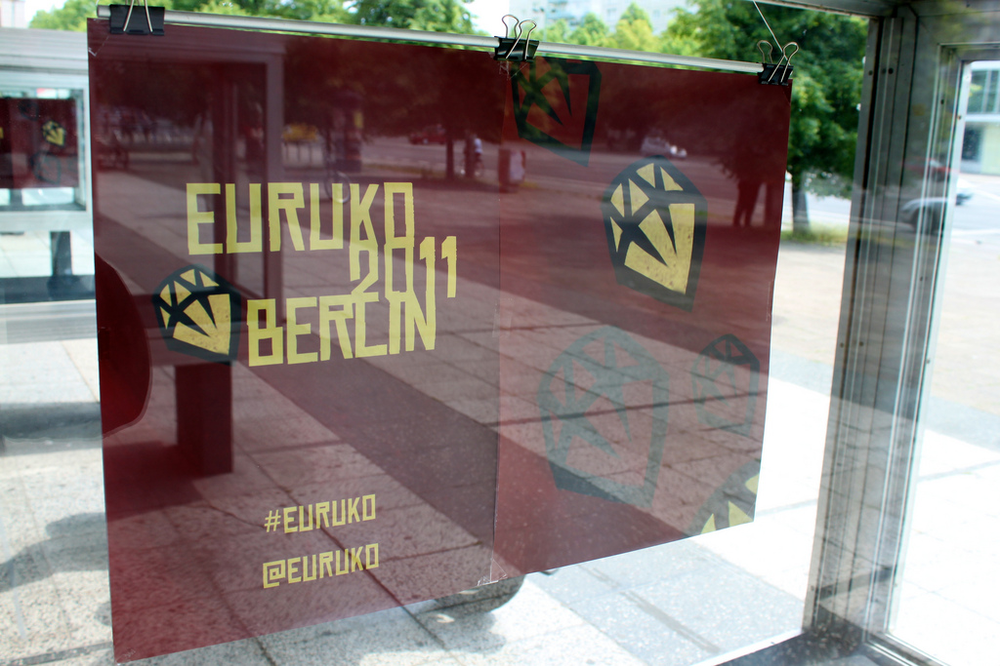
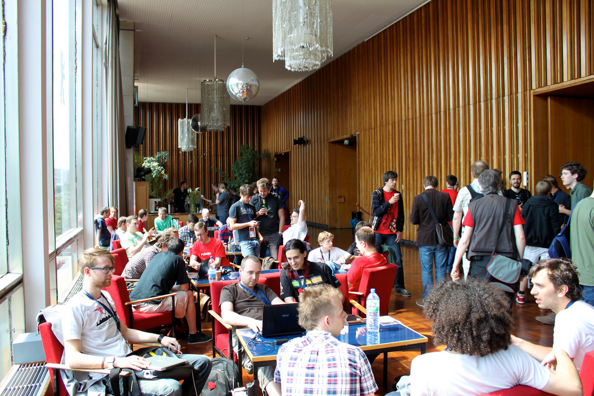
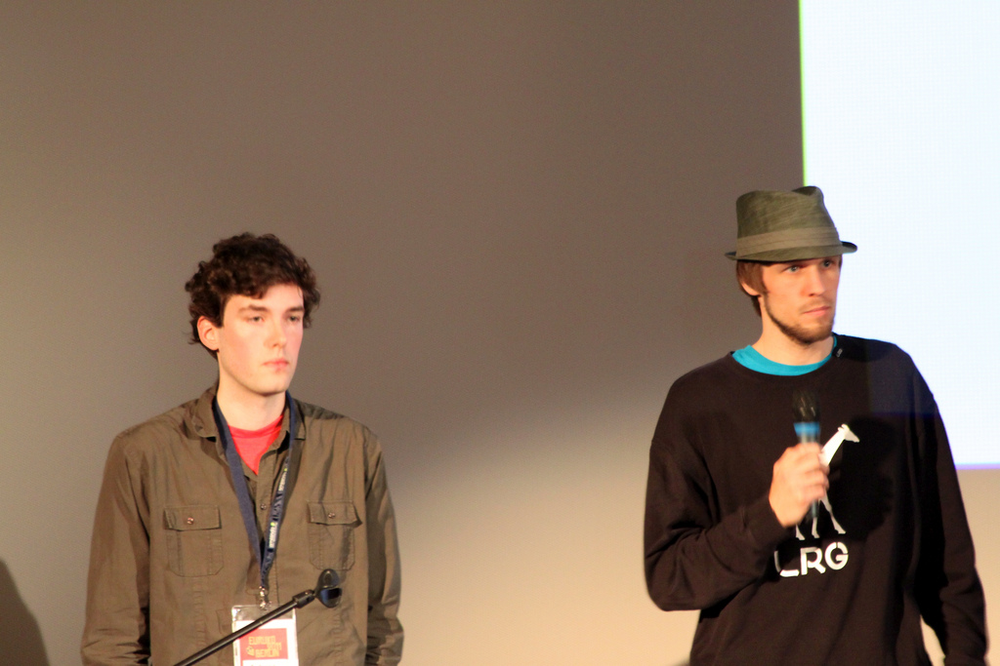

Ruby helps us make movies: Guerilla-DI, scripted tools for a modern film pipeline
Julik Tarkhanov
JRuby hacking guide
David Calavera
The Expression Problem in Ruby: A focus on Traits.
Federico Brubacher
Traits in Ruby 2.0
Mixins may contain state, (traditional) traits don't.
Mixins use "implicit conflict resolution", traits use "explicit conflict resolution"
Mixins
module Logger
def log(message)
puts message
end
end
class Foo
include Logger
end.ancestors # => [Foo, Logger, ... ]Traits
@@@ Ruby
module Logger
def log(message)
puts message
end
end
class Foo
mix Logger
end.ancestors # => [Foo, Object, ... ]
The revenge of method missing
Paolo Perrotta
Be RESTful. Be Web 2.0. But don't mix it
Nick Sutterer
(..) What if your GUI simply is a GUI, talking to REST backends behind the scenes? What if your backend is not a monolithic beast but multiple applications that are exposed as REST services?
It is a common misapprehension that GUI and REST backend have to be (..) highly coupled system?
Roar
https://github.com/apotonick/roar
Model
class Album < ActiveRecord::Base
has_many :songs
..
endRepresenter
module Representer
module XML
class AlbumRepresenter < Roar::Representer::XML
property :id
property :year
collection :songs
link(:self) { album_url(represented.id) }
end
end
endController
class AlbumsController < ActionController::Base
include Roar::Rails::ControllerMethods
respond_to :xml
represents Album
def show
@album = Album.find(params[:id])
respond_with @album
end
endPresenter pattern for Rails
Roar
Cells
Apotomo
?
Presenter pattern for Rails
Roar
Cells
Apotomo
MAUI :)
Bridging the gap - Using JavaScript in Rails to write DRY rich client applications
Andreas Haller, Thorben Schröder

"While building a HTML5 offline app using BackBone.js, we had to re-write a bunch of methods from our Rails models in JavaScript to be used on the client (..)"
theRubyRacer (Embed the V8 Javascript interpreter into Ruby)
CommonJS (organize your JS and Ruby code)
Example
class MAUI::Component::Tree
def children
# ..
end
def render
cxt = V8::Context.new
cxt.load("treeRenderer.js") # shared renderer!
cxt['cmp'] = self # pass Ruby obj to JS
cxt.eval("tree.render(this.cmp);")
end
endEndless fun with Arduino and Eventmachine
Bodo Tasche
Getting Hands On with Adhearsion
Ben Langfeld, Ben Klang
Sentiment analysis of Twitter messages in Ruby
Mateusz Drożdżyński
Writing your own programming language to understand Ruby better
José Valim